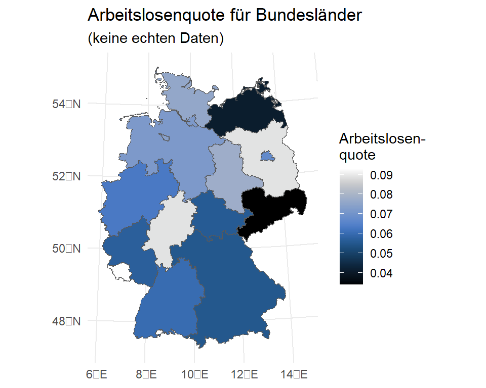

14 Weitere Visualisierungen mit {ggplot2}
Neben den in Kapitel 4 vorgestellten klassischen Grafiken gibt es eine ganze Reihe an Erweiterungen, die {ggplot2}
14.1 Karten (“Choroplethen”)
Für Karten und Arbeiten mit räumlichen Daten steht das Paket {sf} zur Verfügung. Das tolle ist: wir können {sf}-Daten mit den bekannten {tidyverse} Befehlen bearbeiten. Um eine Karte zu erstellen, benötigen wir ein shapefile, welches Informationen zu den darzustellenden Gebieten enthält. Für Deutschland stellt das Geodatenzentrum des Bundesamts für Kartographie und Geodäsie shapefiles für die Gemeinden, Kreise und Länder zur Verfügung.
Hier finden sich die shapefiles der verschiedenen Jahre.
Meist liegen Ergebnisse oder Daten, die wir darstellen möchten auf Basis eines bestimmten Gebietsstands vor (durch Gebietsreformen gibt es kontinuierliche Änderungen sowohl der Gebiete als auch der Kennziffern). Um ein aufwändiges record linkage zu vermeinden, ist es hilfreich das shape file für das entsprechende Jahr zu verwenden. Auf dieser Seite finden sich auch vergangene Gebietsstände. Die Dateien mit dem Namensschema vg250_01-01.utm32s.shape.ebenen.zip enthalten die benötigten Infos, wie wir sie im folgenden verwenden.
Diese shapefiles können wir dann auf Basis der AGS (Amtlicher Gemeindeschlüssel) mit Daten verbinden und dann als Karte darstellen:
Um ein shapefile zu laden, installieren wir zunächst {sf} und laden es dann mit library(). Das eigentliche Laden leistet dann der Befehl read_sf(), wobei wir neben dem Dateipfad in den entpackten Ordner mit den shapefiles zusätzlich das layer, also die Ebene angeben müssen. In den shapefiles des BKG gibt es folgende Layer:
VG250_LAN: Bundesländer (2-stellige AGS)VG250_KRS: Kreise und kreisfreie Städte (5-stellige AGS)VG250_GEM: Städte und Gemeinden (8-stellige AGS)
Wenn wir also die Bundesländer laden möchten gehen wir wie folgt vor:
lan17 <- sf::read_sf("D:/Datenspeicher/regstat/shapefiles/vg250_2017.utm32s.shape.ebenen/vg250_ebenen",
layer="VG250_LAN")Das Objekt lan17 können wir nun für einen ggplot()-Befehl verwenden. lan17 enthält außerdem die Seegebiete, diese können wir mittels eines filter()-Befehls auf die Landgebiete einschränken (GF = 4):
ggplot(lan17) +
geom_sf(size = .1) +
labs(title = "Bundesländer nach Gebietsstand 2017") +
theme_minimal()
ggplot(lan17 %>% filter(GF==4)) +
geom_sf(size = .1) +
labs(title = "Bundesländer nach Gebietsstand 2017") +
theme_minimal()Möchten wir nun die Bundesländer bspw. nach der Arbeitslosenquote einfärben, müssen wir diese an die Daten heranspielen. Der Einfachheit halber simuliere ich hier die Werte:
alo_df <-
data.frame(ags = unique(lan17$AGS),
alq = sample(seq(.03,.095,.001) ,size = 16,replace = T))
head(alo_df) ags alq
1 01 0.076
2 02 0.072
3 03 0.072
4 04 0.074
5 05 0.063
6 06 0.089Jetzt können wir den alo_df an das lan17 shapefile heranspielen mit Hilfe eines left_join().
lan17 %>% filter(GF==4) %>% left_join(alo_df,by = join_by("AGS"=="ags"))lan17 %>% filter(GF==4) %>% left_join(alo_df,by = join_by("AGS"=="ags")) %>%
select(AGS,GEN,alq) %>%
head()Simple feature collection with 6 features and 3 fields
Geometry type: MULTIPOLYGON
Dimension: XY
Bounding box: xmin: 280371.1 ymin: 5471366 xmax: 674202.3 ymax: 6101444
Projected CRS: ETRS89 / UTM zone 32N
# A tibble: 6 × 4
AGS GEN alq geometry
<chr> <chr> <dbl> <MULTIPOLYGON [m]>
1 01 Schleswig-Holstein 0.076 (((464810.7 6100447, 464936.7 6100389, 465073…
2 02 Hamburg 0.072 (((578219 5954278, 578433.9 5954189, 578557.7…
3 03 Niedersachsen 0.072 (((479451.1 5971302, 479365.8 5971220, 479213…
4 04 Bremen 0.074 (((466930.3 5897851, 467015.7 5897733, 467379…
5 05 Nordrhein-Westfalen 0.063 (((477607.3 5818769, 477708 5818638, 477758.9…
6 06 Hessen 0.089 (((534242 5721822, 534214.5 5721748, 534149.4…Die Syntax für den eigentlichen Plot ist dann wieder wie für jeden anderen ggplot() auch - mit fill = können wir eine Flächenfarbe angeben und mit scale_fill_... eine Farbpalette auswählen:
library(scico)
lan17 %>% filter(GF==4) %>% left_join(alo_df,by = join_by("AGS"=="ags")) %>%
ggplot() +
geom_sf(size = .1, aes(fill = alq)) +
labs(title = "Arbeitslosenquote für Bundesländer",
subtitle = "(keine echten Daten)",
fill = "Arbeitslosen-\nquote") +
scale_fill_scico(palette = "oslo") + # setzt scico Paket voraus
theme_minimal()
14.2 Übung
Erstellen Sie selbst eine Karte - für die Länder-, Kreis- oder Gemeindeebene.
- Das Shapefile für das Jahr 2017 finden Sie im Kursordner unter
/origin der Quickablage.